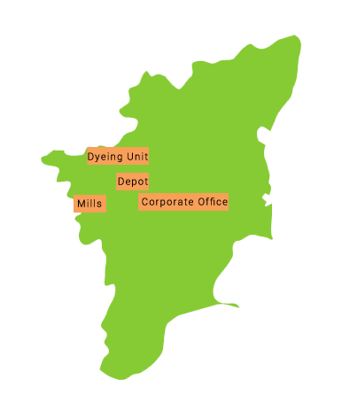

<center>
  <map name="Map" id="Map">
    <area shape="rect" coords="156,216,260,238" href="#/about" />
    <area shape="rect" coords="96,166,169,187" href="#/dyeing" />
    <area shape="rect" coords="131,196,168,215" href="#/process" />
    <area shape="rect" coords="81,219,120,240" href="#/process" />
  </map>
</center>


